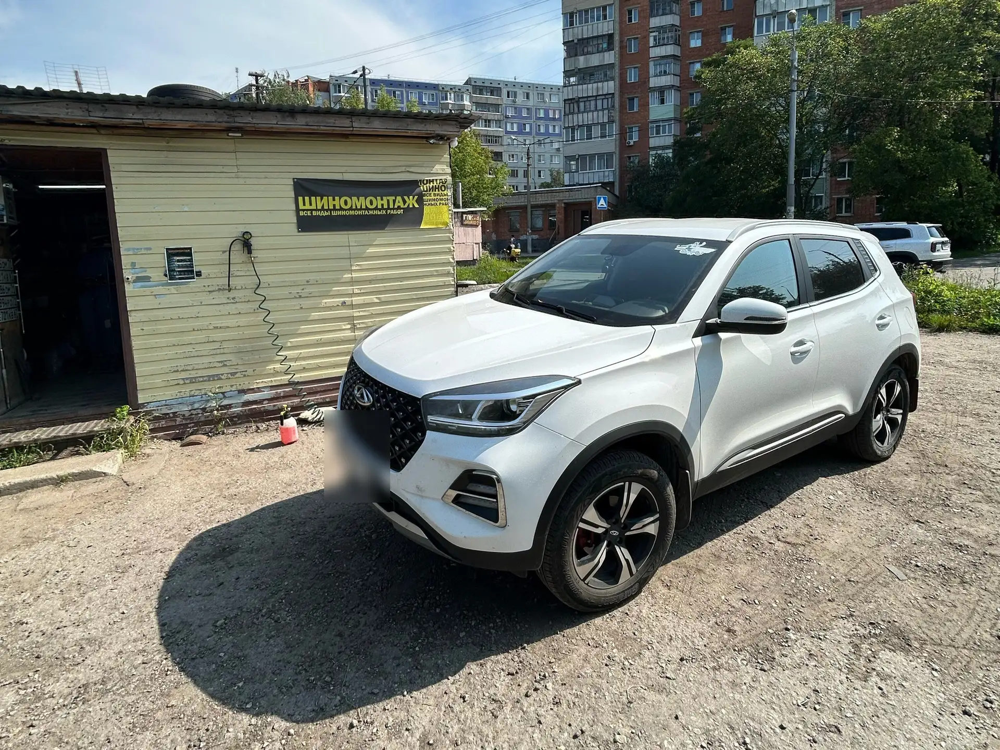
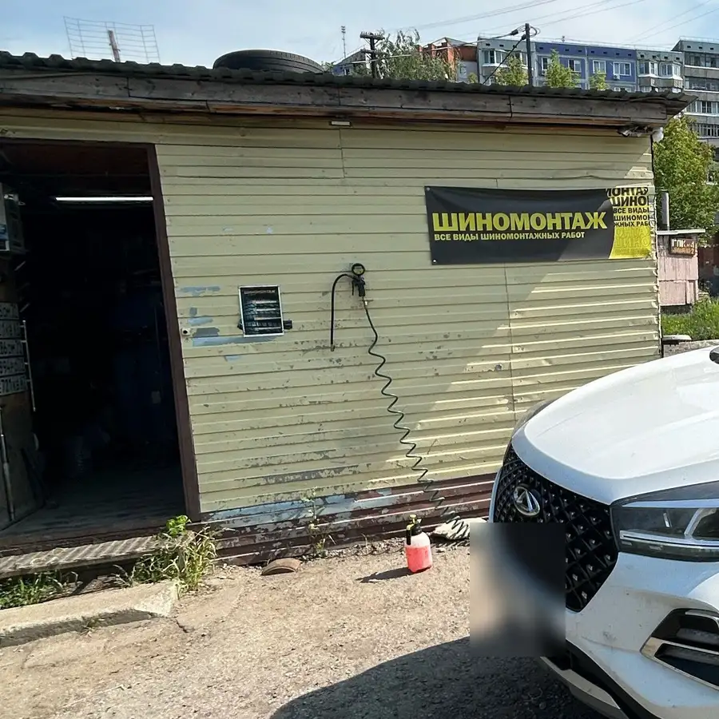
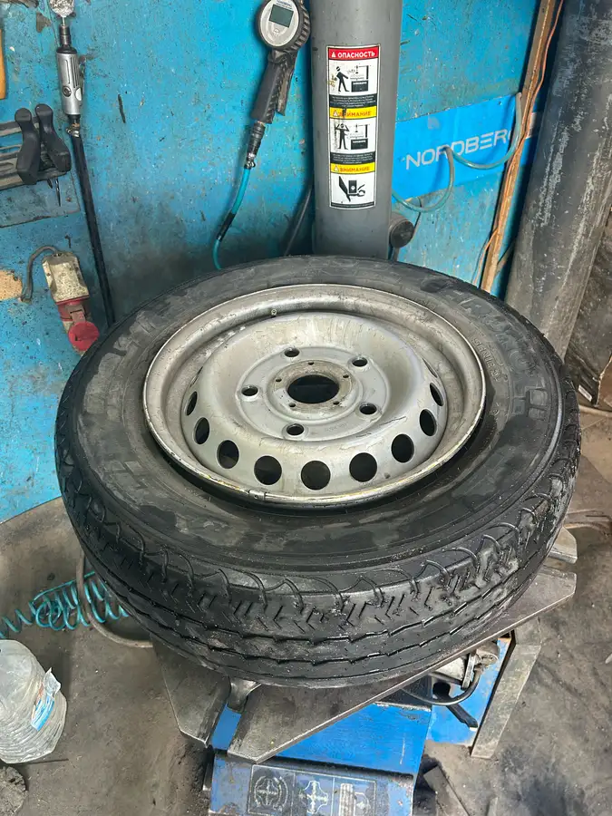
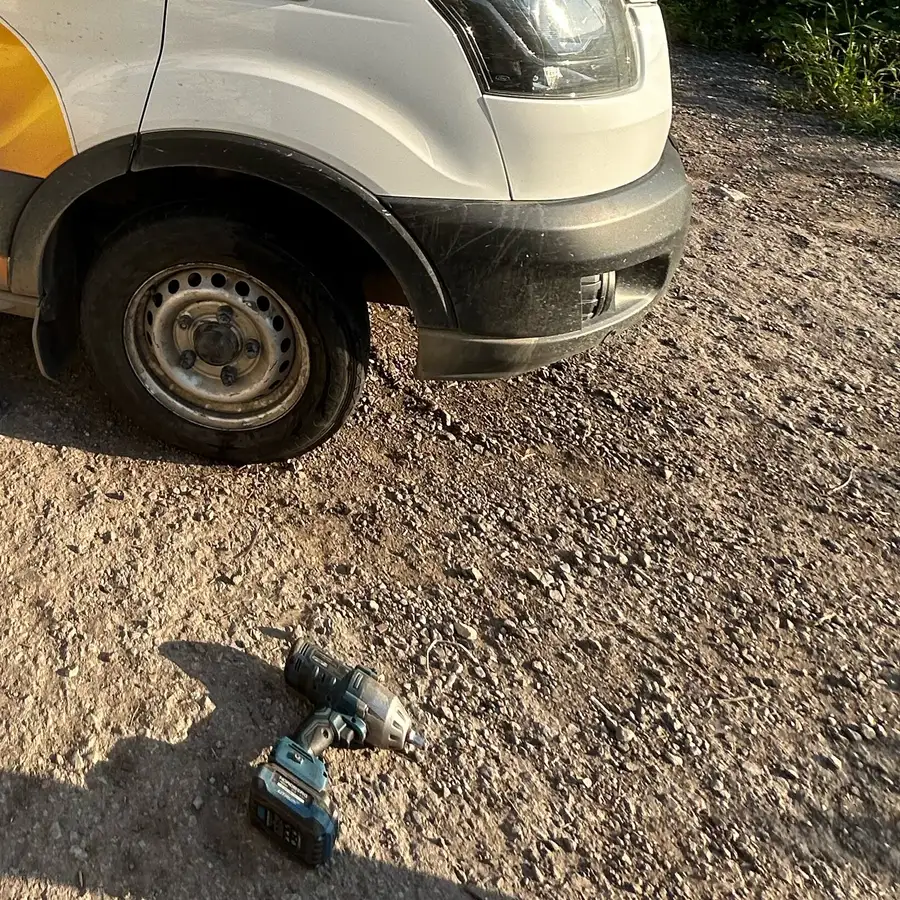

Шиномонтаж · Тула · Бондаренко, 2
Шиномонтаж в Туле – запись с телефона за минуту
Выберите день и время – заявка уйдёт в WhatsApp. Приезжайте на Бондаренко, 2, каждый день с 8:00 до 20:00.
- Каждый день с 08:00 до 20:00
- Можно записаться заранее
- Ремонт проколов и порезов

Цены
Цена зависит от радиуса и того, что с колесом. Назовём её при записи.
Шиномонтаж
- Переобувка комплектауточнить
- Балансировкауточнить
Ремонт
- Ремонт проколауточнить
- Ремонт бокового порезауточнить
Пришлите фото колеса в WhatsApp – скажем, что можно сделать и сколько это будет стоить.
Как проходит
- 01
Записались к своему времени
На сайте, в WhatsApp или по телефону.
- 02
Приехали на Бондаренко, 2
Записались заранее – приезжаете к своему времени.
- 03
Мастер смотрит колёса
Подскажет, в каком состоянии резина.
- 04
Готово – и в путь
Переобули, отбалансировали, поехали.



Что обещаем
Каждый день до 20:00
Без выходных, с 08:00 до 20:00.
Запись к своему времени
Запишитесь заранее – приедете к своему времени.
Проколы и порезы
Латаем проколы и боковые порезы.
С гарантией
На шиномонтажные работы даём гарантию.
Отзывы с Яндекс.Карт
«Хорошее место и хорошие мастера. Сделали все быстро и качественно. За 900 рублей сделали полностью колесо за 15 минут. Советую всем»
Сергей Кортунков · 2 августа
«Нужно было срочно переобуться, везде занято, а тут вошли в положение и всесто перекура переобули меня. Такой скорости работы я давно не видел, ощущение, что заехал на питстоп а не в шиномонтаж. Парни молодцы, знают свое дело! Все слаженно, быстро. Теперь только сюда!!!»
Инна К. · 2 ноября 2024
«Все понравилось, записали переобуться прямо на следующий день, все сделали быстро и хорошо»
Neltih · 2 декабря 2025
Отзывы с карточки на Яндекс.Картах, без правок.
Частые вопросы
Можно записаться заранее?
Да. Выберите услугу, день и время на сайте – заявка уйдёт в WhatsApp. Или позвоните.
Ремонтируете боковые порезы?
Да. Пришлите фото в WhatsApp – скажем, можно ли отремонтировать.
Когда вы работаете?
Каждый день с 08:00 до 20:00.
Где вы находитесь?
Тула, улица Бондаренко, 2.
Запишитесь к своему времени
- Адрес
- ул. Бондаренко, 2, Тула
- Часы
- Каждый день 08:00–20:00
- Телефон
- +7 (953) 192-99-99